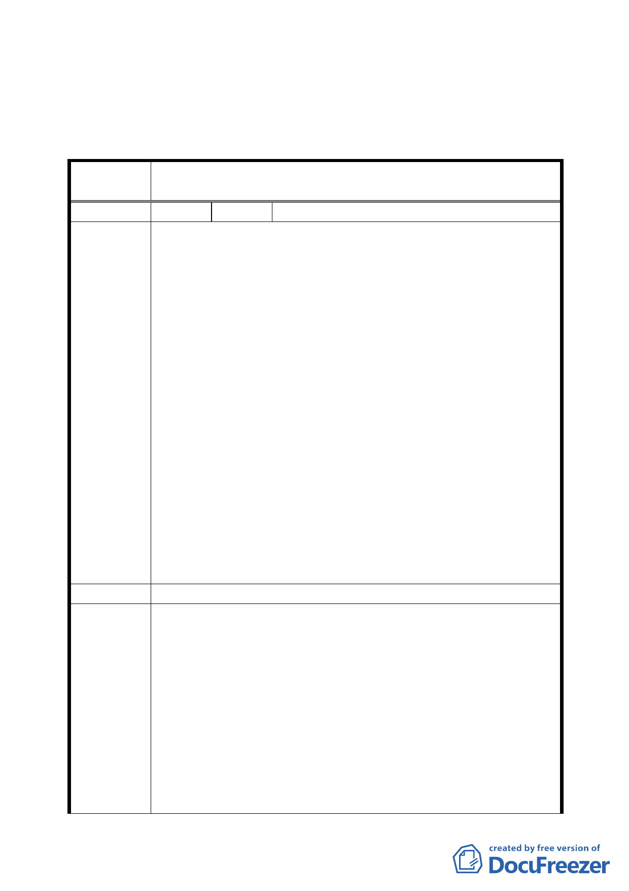

市發展局以航照圖至現場會勘與查核。
四、公民或團體所提意見審決如後附綜理表。
臺北市都市計畫委員會公民或團體所提意見綜理表
案
名
變更臺北市信義區福德段四小段 135 地號等 7 筆保護區
土地為宗教特定專用區（松山慈惠堂）主要計畫案
編 號 １ 陳情人 發展局彙整之說明會出席民眾意見
一、旨揭說明會於95年6月26日辦理完成，當天部分出席民眾
對本變更案陳述反對理由彙整如下：
( 一 ) 影響環境品質及居住安寧部分：
1、法會及活動舉辦期間唸經及鞭炮噪音過大。
2、法會或活動時燒紙錢造成空氣污染。
3、松山慈惠堂周邊鄰近福德國小及瑠公國中，應考慮其影響
學童教育環境。
( 二 ) 影響當地交通：由於進香團之大型遊覽車及汽機車進入
社區時進行交通管制，影響當地交通。
陳 情 理 由 ( 三 ) 水土保持問題：下大雨及颱風時，靠近停車場地區曾有
土石沖刷下來。
( 四 ) 建築物量體及內部規劃部分：
1、松山慈惠堂係屬違規建物，建請市府拆除。
2、建請松山慈惠堂維持現狀，不能興建納骨設施。
( 五 ) 土地私權尚有糾紛：本變更案周邊土地之福德段4小段
139-1地號土地，堂方與附近地主尚有私權糾紛，建議堂
方拿出善意一併處理。
二、前述意見提供貴會審議參考。
建 議 辦 法 反對本變更案。
一、 有關因舉辦宗教活動衍生噪音、施放煙火、環境髒亂等
問題，請市府逕依消防及環保等相關法令規定辦理。
二、 在交通方面，請規劃單位就細部計畫變更為計畫道路部
分，是否全線納入變更研提修正方案，併大眾運輸管理
專案小組
審查結論
計畫、交通改善計畫等，續提大會討論。
三、 有關水保問題未來基地新建開發時，須先提出水土保持
計畫送請市府建設局核准，始得依建築法相關規定辦理
動工。
四、 案內若涉有違建之處理，請市府權責單位逕依相關規定
辦理。
五、 本案地藏王廟未來改建應以既有容積及量體為限，並於
-7-